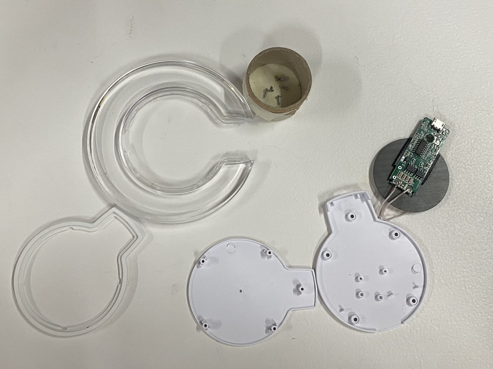
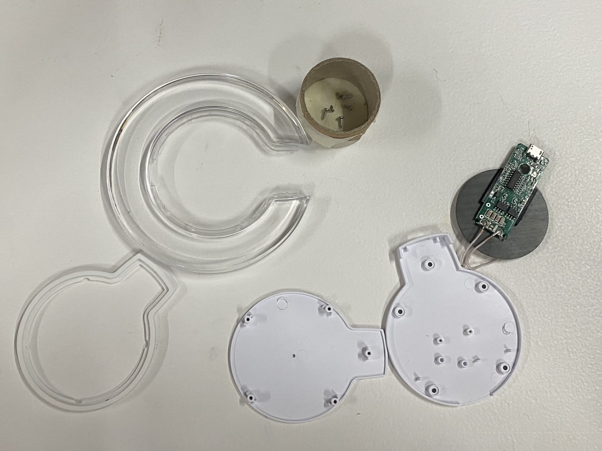

Documenting Design
Course Details
Name: Documenting Design
Dates: Multiple Times
Faculty: Pablo Zuloaga Betancourt
Website
I have built a website before using Wordpress. I have even tried coding my own site with HTML and CSS although I found that process tedious and I struggled to turn the design vision I had into reality.
For this website, I wanted to create it for free rather than having to pay a hosting fee. In class we were introduced to the idea of hosting a static site on GitHub which seemed like a good option.
I decided I didn't like the limitations of GitBook or the other suggested options, but I liked the look of the websites from previous years that used Material for MkDocs. So, I started up my site using MkDocs and occasionally taking inspiration from the pages of students from previous years as well.
MkDocs is relatively straightforward and easy to use because Markdown is relatively easy to understand and a lot of tutorials exist online. I have not quite figured out how to do all of the things I would like to be able to do with this site in terms of customization, but it is a good start and I am sure I will continue to learn more.
My MkDocs
I have a pretty basic structure to my Markdown files. I have been implementing some HTML into the files as necessary to embed images, video, and external links as necessary.
nav:
- Home: index.md
- About: about/me.md
# - Reading: about/reading.md
- Term 1:
- Design Studio 01:
- Intro Week: term1/designStudio/designWK01.md
- Session Two: term1/designStudio/designWK02.md
- Session Three: term1/designStudio/designWK03.md
- Design Space: term1/designStudio/designSpace.md
- Landing: term1/landing.md
- Documenting Design: term1/documenting.md
- Fundamentals of Digital Fabrication: term1/digfab.md
- Machine Paradox: term1/machineParadox.md
- Living With Your Own Ideas: term1/ownIdeas.md
- Extended Intelligences: term1/extendedIntelligence.md
Unfortunately, there has been a slight issue I have been having with line breaks in this code. This has resulted in me needing to resort to some silly hacks like including line break indicators in HTML. I hope to fix this at some point, but for now, this solution works despite being inelegant.
It was helpful to add a spellchecker to Visual Studio Code so that I could catch my typos. I added the "Code Spell Checker" extension which greatly improved the spelling on my website.
Additionally, I learned a useful way to embed video into these documents is to directly paste the video into the GitHub page and then build the HTMl class around it. For example, this allows the video have controls and sound which were not working as well when I put in a relative path to the video file in my repository.
<video
src="https://github.com/user-attachments/assets/e0970369-a601-4505-973f-5b1ce7edbb6e" controls="controls" style="max-width: 100%;">
</video>
I am continuing to learn more and expect that this webpage will keep changing, growing, and becoming more and more personalized as the course goes on.
Documentation
In terms of videos and photographs in the documenting process, I am getting better at remembering to take photos and videos of the work I am doing in class. I now frequently take photos now even when I am not sure what exactly I am documenting and often I find I end up using some of the random photos I took.

 
